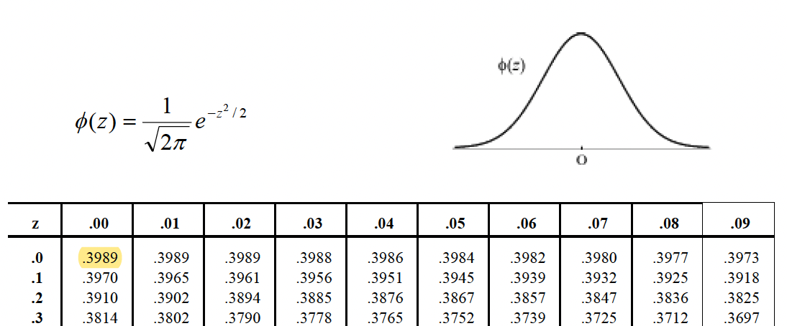
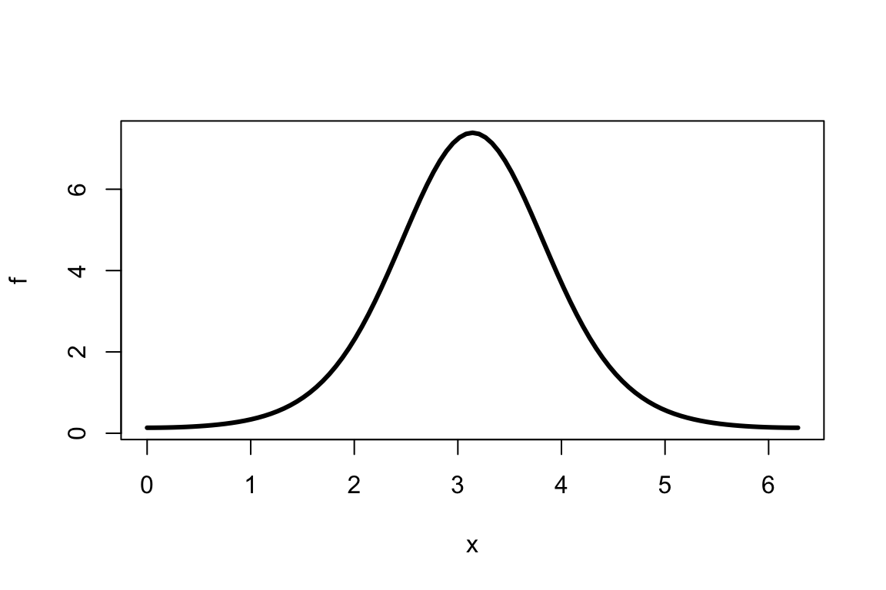
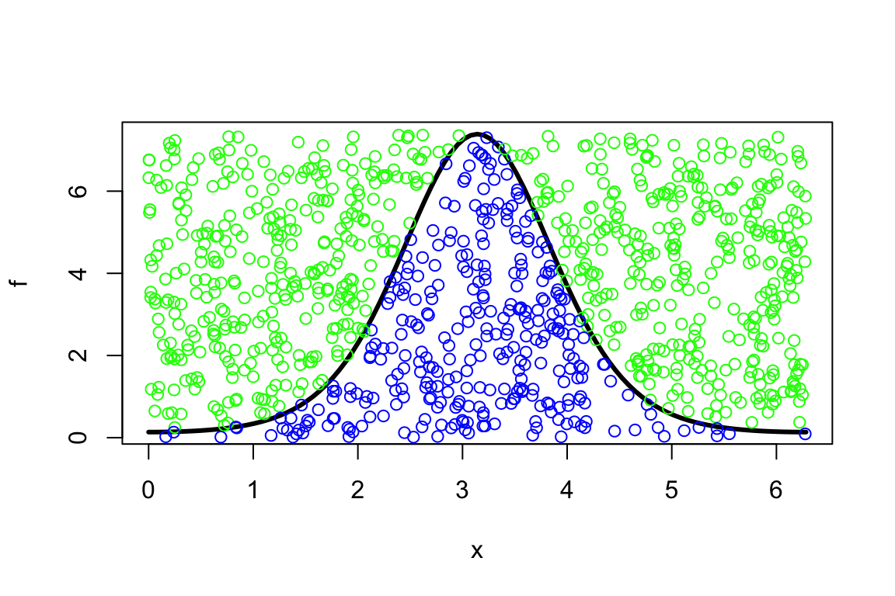
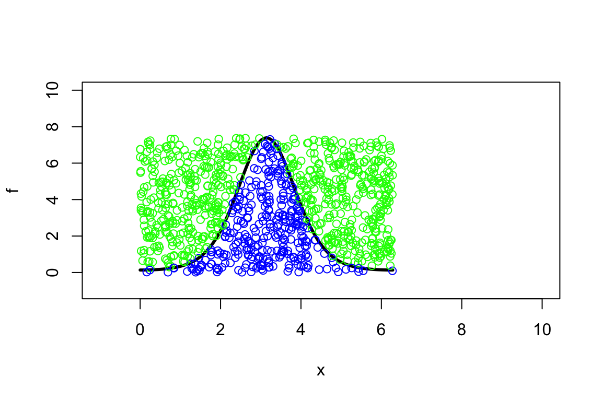

5 Simulation
Random numbers can be used for:
- simulation of complex systems
- encryption
- bootstrap methods (the bootstrap method is a resampling technique used to estimate statistics on a population by sampling a dataset with replacement. It can be used to estimate summary statistics such as the mean or standard deviation \(\Longrightarrow\) Risk models course)
- design of experiments
- performance testing
- simulation testing of models and estimation
- …
How do we get random numbers?
- Use a natural phenomena. E.g: a dice, a deck of cards, …
- Use a table of random numbers.
- Computer algorithm: easy, but the algorithm should be:
- carefully selected
- fast
- simple
- reproducible
Item 3 is included in R. It is easy to simulate from most distributions of interest!
- Random numbers (in R) are actually called pseudo-random numbers (because the algorithm can repeat the sequence, and the numbers are thus not entirely random).
- Generated from an algorithm.
- For all practical purposes, pseudo-random numbers behave like true random numbers.
- By specifying the input to the algorithm, pseudo-random numbers can be re-created.
- The default pseudo random number generator in R is the Mersenne Twister.
- In R the Mersenne Twister uses a random seed as input: constructed from time and session ID.
- You can replace the random seed with a fixed seed with the
set.seed()function.
5.2 Random numbers and probability distributions
Very useful link.
- Simulation from a uniform distribution:
- Simulation from a normal distribution:
- Simulation from a gamma distribution:
- Simulation from a binomial distribution:
- List of functions:
> # Density -> d
> dnorm(x, mean = 0, sd = 1, log = FALSE)
>
> # Distribution function -> p
> pnorm(q, mean = 0, sd = 1, lower.tail = TRUE, log.p = FALSE)
>
> # Quantile function -> q
> qnorm(p, mean = 0, sd = 1, lower.tail = TRUE, log.p = FALSE)
>
> # Random generator -> r
> rnorm(n, mean = 0, sd = 1)- Remember…

Figure 5.1: Standard Gaussian distribution.
- Distributions:
>
> # normal: dnorm(x=..., mean=..., sd=...); x is a quantile.
>
> # dnorm(0,0,1) = 1/sqrt(2*pi)
> dnorm(0, 0, 1)
## [1] 0.3989
> dnorm(0, 0, 1) == 1/sqrt(2 * pi)
## [1] TRUE
>
> # normal: pnorm(q=..., mean=..., sd=...); q is a quantile.
> pnorm(0, 0, 1)
## [1] 0.5
> pnorm(-1.96, 0, 1)
## [1] 0.025
> pnorm(-1.64, 0, 1)
## [1] 0.0505
> pnorm(1.96, 0, 1)
## [1] 0.975
> pnorm(1.64, 0, 1)
## [1] 0.9495
>
> # normal: qnorm(p=..., mean=..., sd=...); p is a probability.
> qnorm(0.5, 0, 1)
## [1] 0
> qnorm(0.95, 0, 1)
## [1] 1.645
> qnorm(0.975, 0, 1)
## [1] 1.965.3 Monte Carlo integration (example)
- Consider the function \(f(x)=e^{2\cos(x-\pi)}\) and compute the integral \[\int\limits_0^{2\pi} f(x) dx:\]

- Monte Carlo method:
- simulate uniformly distributed points \((x_1,~y_1), \ldots, (x_n,~y_n)\) in \([0, ~2\pi] \times [0,~8]\) within a “box”. Note that \(0<f(x)<e^{2}, ~\forall ~x \in [0, ~2\pi]\):
> set.seed(1234)
> plot(f, 0, 2 * pi, lwd = 3)
> x <- runif(1000, 0, 2 * pi)
> y <- runif(1000, 0, exp(2))
> mycol <- ifelse(y < f(x), "blue", "green")
> points(x, y, col = mycol)
(to get a wider view of what’s happening:)
> set.seed(1234)
> plot(f, 0, 2 * pi, xlim = c(-1, 10), ylim = c(-1, 10), lwd = 3)
> x <- runif(1000, 0, 2 * pi)
> y <- runif(1000, 0, exp(2))
> mycol <- ifelse(y < f(x), "blue", "green")
> points(x, y, col = mycol)
- estimate the probability of points (say \(m\)) being below the curve of \(f\): \(m/n\).
- the area of the “box” is \(2\pi \times e^2 \approx 46.43\), so the estimated integral, i.e., the area under the curve, becomes \[\int\limits_0^{2\pi} f(x) dx \approx 46.43 \times \frac{m}{n}.\]
> set.seed(4321)
>
> x <- runif(1e+06, 0, 2 * pi)
> y <- runif(1e+06, 0, exp(2))
> m.over.n <- sum(y < f(x))/length(x)
>
> options(digits = 20)
> (MCint <- m.over.n * 46.43)
## [1] 14.325558629999999738
>
> # 'real' value
> (Realint <- integrate(f, 0, 2 * pi)$value)
## [1] 14.323056878100514311
>
> (MCint - Realint)
## [1] 0.0025017518994854270886
>
> options(digits = 4)